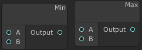

Compare Nodes
Max / Min

Returns the smaller or larger of the inputs. Each component of the input is operated on seperatly.
Lerp/Mix/Blend

Lerp between A and B inputs.
found below showing the expected values.
Lerp is a linear interpolation between the first 2 elements. A table can be
This node is excelent for smoothly picking between values in a range.
| A | B | Factor | Value |
|---|---|---|---|
| 0 | 1 | 0 | 0 |
| 0 | 1 | 1 | 1 |
| 0 | 0 | 1 | 0 |
| 0 | 1 | 0.5 | 0.5 |
| 2 | 3 | 0.75 | 2.75 |
Step

If b > a return 1. Otherwise return 0.
SmoothStep

If X < Edge 1 return Edge 1.
If X > Edge 2 return Edge 2.
Otherwise return a smoothly changing value between the two edges.
Greater Than & Less Than

Returns 1 if the condition is met. 0 otherwise.
Math Nodes
Vector Length
Get the Euclidean length of the vector using the same logic found in the Pythagorean theorem.
Add / Subtract / Multiply / Divide

These math nodes preform basic math on their inputs. The ports are always the same type and each operation takes place independently on the components of the inputs.
Misc
HSV To RGB
RGB To HSV
Convert between (Hue Saturation Value Alpha) and (Red Green Blue Alpha)
Combine XYZW
Combine several nodes into one. Missing Values will be replaced with 0.
Zero Extend

Extend the input to contain more values. Missing values will be replaced with 0
Split

This node splits a multi component input into parts. The outputs dynamically change to match the avaliable ones in the input.
Raw Text

This node allows raw shader code to be injected.
The top section allows you to add inputs and outputs. These values will be
initilized before your code runs. The next section is a multi line text box
that allows you to enter your own code. Instead of using the variables you
requested wrapp them in braces like {{this}}. This will cause your variables
to have their names mangled to match the values actually present in the shader.
In the example above the value Bang is replaced with Clang.xyxy.
Input
Time

Returns the number of seconds since the world loaded. This is not synced.
Property

Allows creating a property thatt can be edited in your modules section of the
material properties. If checked the Is Constant checkbox will cause the
value to be used directly and it will not be avaliable for editing in the inspector.
The type of property can be selected from the dropdown. The name used in the material properties can be found and edited in the upper text box.
Texture - Poiyomi controls

Create a new texture that is configured like it would be if it was a built in Poiyomi texture.
AudioLink Simple Sample
Sample the AudioLink intensity for individual bands at a particular point in time. Has Audio Link is 1 if audio link is active at the moment.
AudioLink Chrono

Sample the AudioLink Chrono values. The output acts roughly like time modified in the ways that the dropdowns suggest.
Gradient

Create a new texture that to act as a gradient including the Poiyomi built in gradient editor.
UVLogic

Sample UVS. This provides an interface like you would expect to find on a texture.
Trig
Sine / Cosine / Tangent

Each of these functions takes one input in radians and returns a value according to normal trig rules.
ArcSine / ArcCosine / ArcTangent

Each of these functions takes one input and returns a value according to normal trig rules.
ToDegrees / ToRadians
Convert values between degrees and radians depending on the node selected
PoiModuleOutput
This is a special node that you can not delete or copy.
This node is used to interact with the larger Poiyomi shader and set values used elsewhere in the shader.